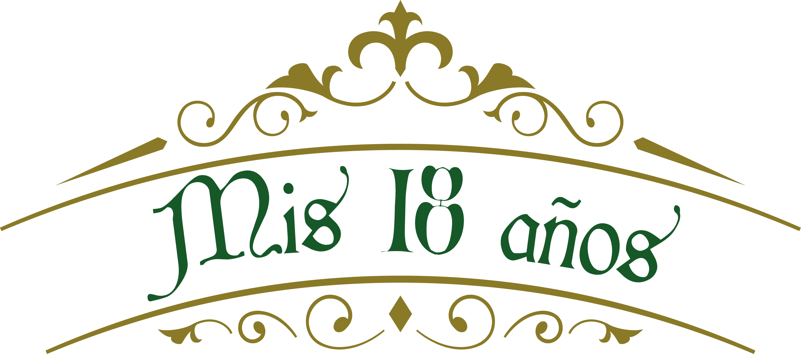

Loading...

Estan codialmente invitados a una noche llena de baila y diversion.
Sabado
27
Julio del 2024
Mis Padres
Nazario Garcia Estrada &
Maria Eugenia Guzman Solorio
Ceremonia Religiosa
Ixtapaluca Col. paseos de coatepec
calle paseo de los molinos
Mz.3 Lote 49
Lago de los Cisnes
Confirmar Asistencia
Ver Ubicación

:max_bytes(150000):strip_icc()/alasdair-elmes-ULHxWq8reao-unsplash-8cf0ae7475064fa0a601108668de20a2.jpg)